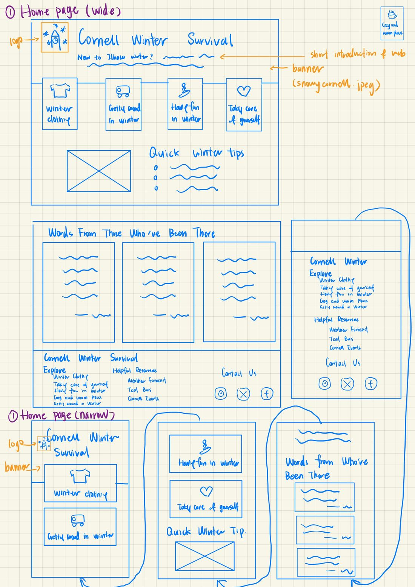
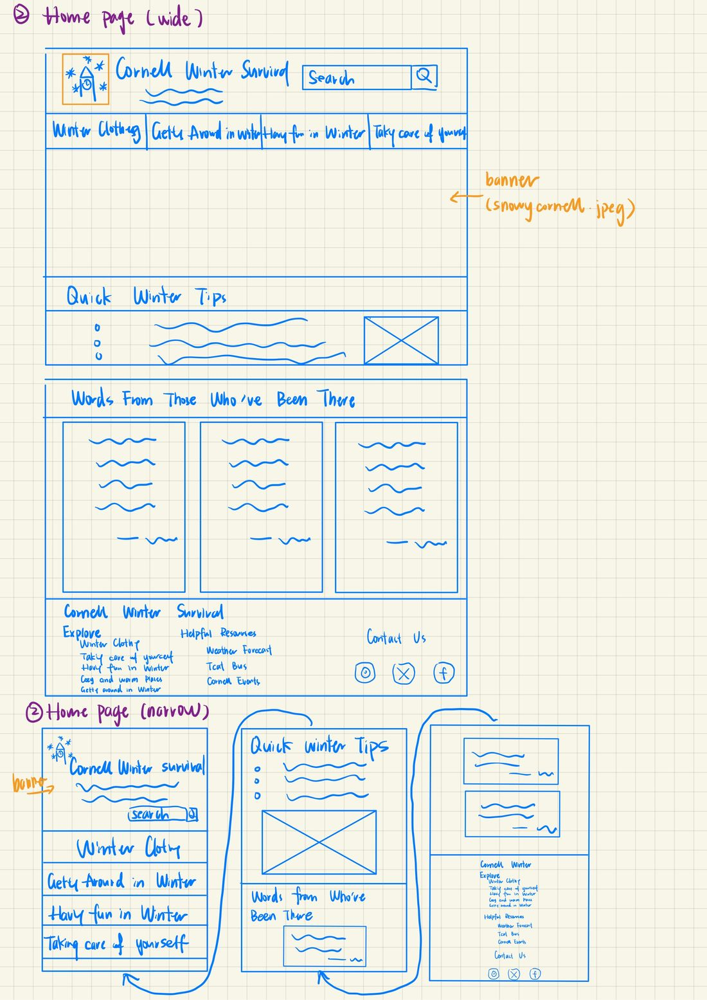

Idea 1: Icon cards
Large navigation cards with icons for the four topics help students explore. Below them sit quick winter tips and a section of advice from students who have been there. On narrow screens, the cards stack vertically for easier browsing.

Idea 2: Navigation bar and banner
A horizontal navigation bar, a search bar, and a large winter-themed banner lead the page. On narrow screens, the navigation links stack vertically and the content adjusts to the screen width.
